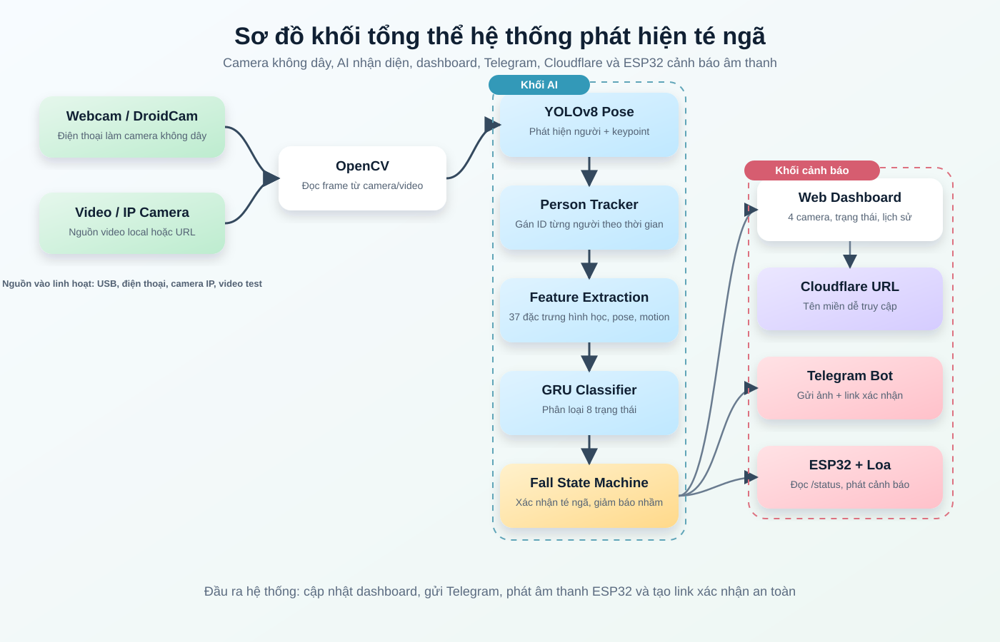
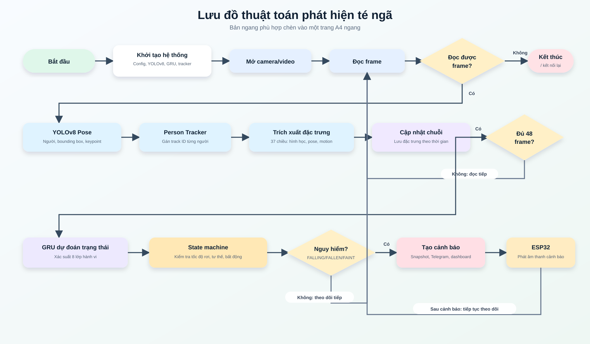
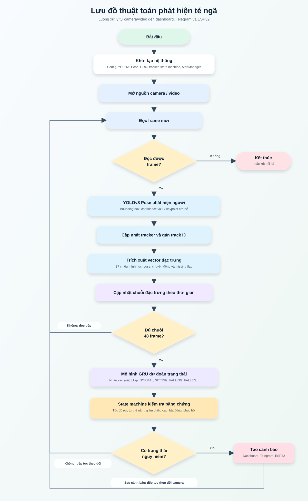
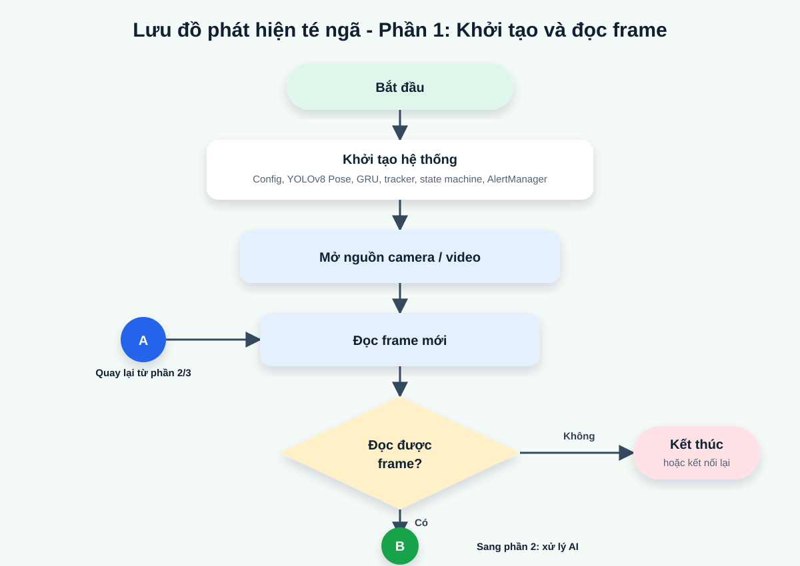
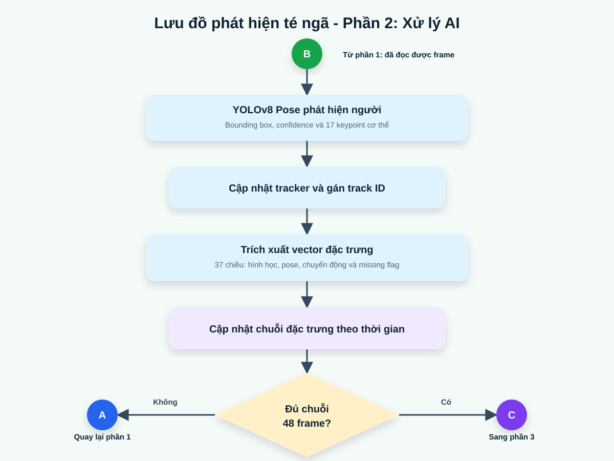
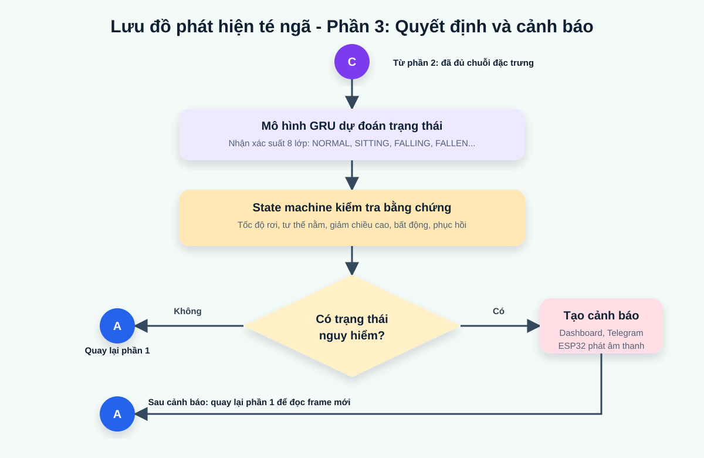
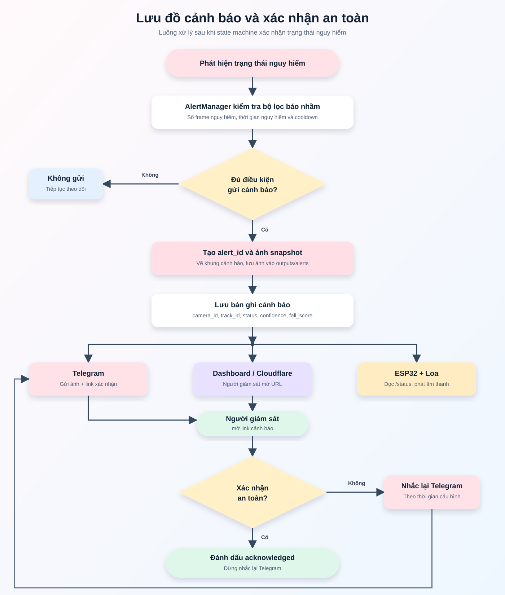
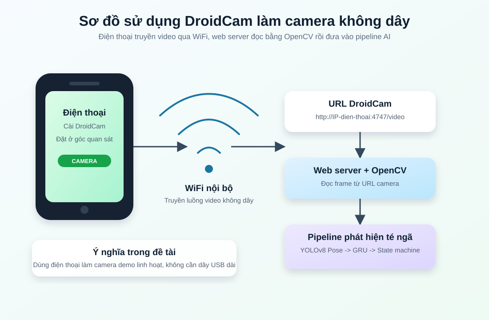
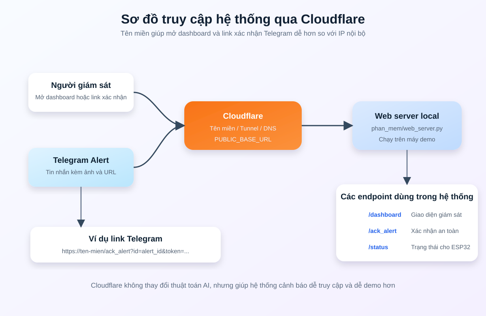

1. Sơ đồ khối tổng thể hệ thống

2. Lưu đồ thuật toán phát hiện té ngã - Bản ngang A4

2 cũ. Lưu đồ thuật toán phát hiện té ngã - Bản dọc dài

2a. Lưu đồ phát hiện té ngã - Phần 1

2b. Lưu đồ phát hiện té ngã - Phần 2

2c. Lưu đồ phát hiện té ngã - Phần 3

3. Lưu đồ cảnh báo và xác nhận an toàn

4. Sơ đồ DroidCam làm camera không dây

5. Sơ đồ truy cập qua Cloudflare
